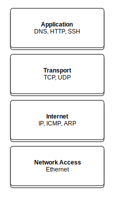
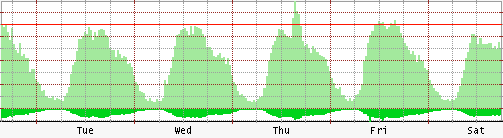
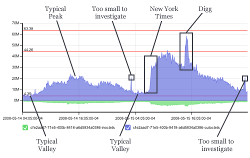
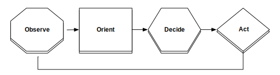
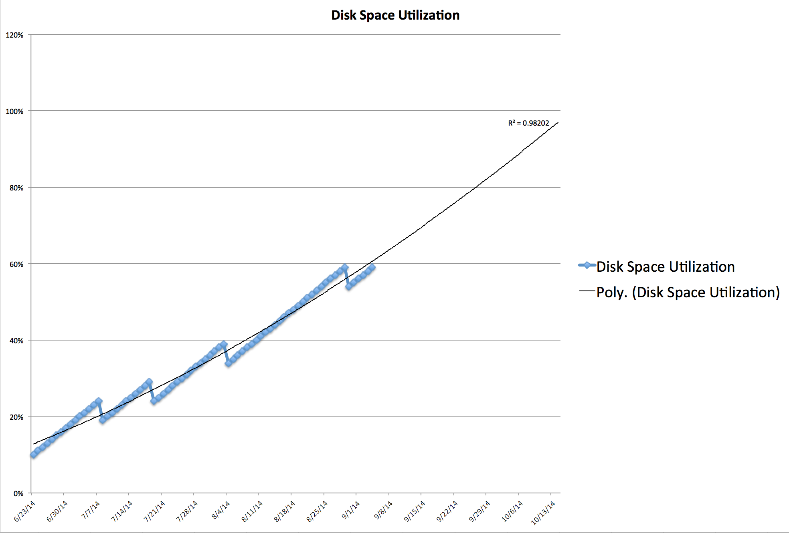
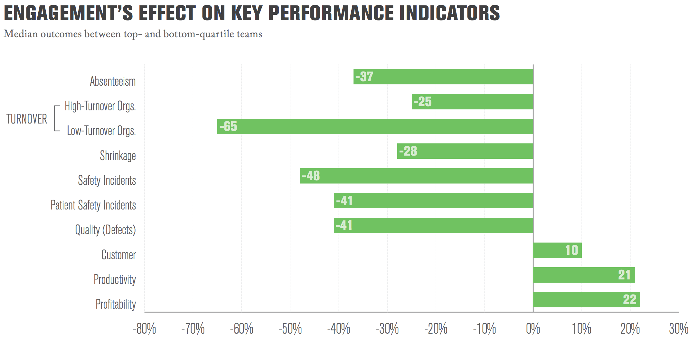
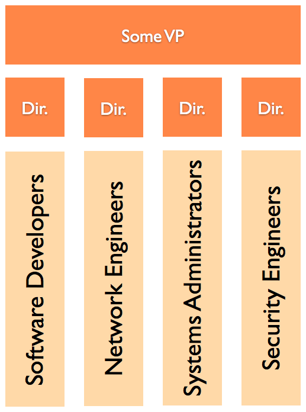
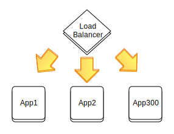

How to be good at Operations
in 45 minutes
Created by Adam Jacob / @adamhjk

This work is licensed under a Creative Commons Attribution-ShareAlike 4.0 International License.
sur·vey
noun, sərˈvā/
1. a general view, examination, or description of someone or something. "the author provides a survey of the relevant literature"
Who are you?
- Systems Administrators
- Software Developers
- Lost Web Performance Gurus
- Executives
What is Operations?
By which we mean technical operations
The work of building and maintaining computer systems, networks, and applications.
Computers
 Original summary
Original summary
Networking
Learn to Type
Literally everything we do is typing.
-module(productivity).
-export([evaluate/2]).
evaluate(Me, You) ->
Me / You.
% Call me!
productivity:evaluate(120, 30).
> 4.0
50 WPM
Is the minimum goal
Just be average!
Learn an Editor
- Open a file without a finder/terminal
- Syntax highlighting
- Line numbering
- Find and Replace

Know your purpose
- What is the mission?
- How does your organization intend to fulfill it?
- How do you contribute?
- What are the stakes?
Know the people
- Software Developers
- Business Decision Makers
- Systems and Network Administrators
- Marketing and PR
- Sales
- Legal
Being good at Operations
Means being good at two thingsAvailability
Is the system down? Bring it up.
Efficiency
Make the effort required to do work easier.
Focus on Availability
Efficiency Follows
Availability
$$Availability = \frac{Uptime}{(Uptime + Downtime)}$$ Much thanks to Theo Schlossnagle, John Allspaw, Patrick Debois, and others for informing much of this section.Availability is everybody's problem
The 9's
| Availability | Downtime per month |
|---|---|
| 90% (one nine) | 72 hours |
| 99% (two nines) | 7.2 hours |
| 99.9% (three nines) | 43.8 minutes |
| 99.99% (four nines) | 4.32 minutes |
| 99.999% (five nines) | 25.9 seconds |
The M's
- Mean Time To Failure (MTTF)
The average time there is correct behavior - Mean Time To Diagnose (MTTD)
The average time it takes to diagnose the problem - Mean Time To Repair (MTTR)
The average time it takes to fix a problem - Mean Time Between Failures (MTBF)
The average time between failures
Focus your efforts
On reducing Mean Time to Diagnose and Mean Time to Repair.
Failure is inevitable - it's how you detect and react that matter most to availability.
Diagnose
Metrics Collection
Collect metrics from the operating system, network, and applications.
High resolution matters!
As few systems as possible.
Diagnose
Two Critical Metrics
- Is it up - from a users perspective
- Is it making money
Diagnose
Graphing, Trends and Analysis
Use graphs to understand normal behavior.

Diagnose
Graphing, Trends and Analysis
Use graphs to understand abnormal behavior.

Diagnose
Alerts
Get the attention of the right humans.
- As few alerts as possible
- Routed to the people who can take action
- Start with the is it up alert
- Never create an alert that isn't actionable!
Repair
Incident Response

- Observe: what is going on.
- Orient: put what is happening in context.
- Decide: what to do.
- Act: implement your decision.
Repair
Orient
Orient is the step we often fail at.
Thinking is the best tool we have in incident response.
Understanding more about the system, and how each piece behaves, is what separates the good from the great.
Repair
Incident Command
The First Responder is the default Incident Commander
- Decides what to do next
- Coordinates resources
- Can hand off command
- Communicates status
- Not about rank
There is only ONE Incident Commander.
This isn't always true in real Incident Command, but go with it.
Learn
Post Mortem
Incident Commander schedules a post mortem within 24 hours of incident resolution.
Purpose is to learn from the incident, and and identify the work needed to:
- Prevent recurrence (if necessary)
- Improve Mean Time To Diagnose
- Improve Mean Time To Repair
Progress on safety coincides with learning from failure. This makes punishment and learning two mutually exclusive activities: Organizations can either learn from an accident or punish the individuals involved in it, but hardly do both at the same time. The reason is that punishment of individuals can protect false beliefs about basically safe systems, where humans are the least reliable components. Learning challenges and potentially changes the belief about what creates safety. Moreover, punishment emphasizes that failures are deviant, that they do not naturally belong in the organization...Sidney W.A. Dekker, Ten Questions about Human Error: A New View of Human Factors and System Safety (Human Factors in Transportation)
Learn
How to run a Post Mortem
- Invoke the space: we are here to learn, not to blame
- Describe the incident
- Determine root cause
- Establish the timeline
- Describe customer impact
- Describe remediation tasks for the root cause
- Describe improvement tasks for response process
Prioritize the outcomes
Capacity Planning
- Identify key metrics
- Put them on a graph
- Set a limit
- Plot a trend line
- Expand your time horizon
Do this on a regular cadence - monthly, etc.
Capacity Planning
Availability Roundup
- Understand your Availability Targets
- Track and understand your M*'s
- Reduce time to detect and repair
- Have an incident response and command process
- Perform and publish post-mortems for every incident
- Use capacity planning to avoid obvious incidents
Efficiency
$$Efficiency = \frac{Output}{Effort}$$Make the effort required to do the work smaller.
People
Engaged Workers Rule
 Stats in this section come from asking 25 million employees the same 12 questions in Gallup's state of the American Workplace with causality evidence from Causal Impact of Employee Work Perceptions on the Bottom Line of Organizations.Sources of Engagement
- Clear expectations
- Opportunity to shine
- Praise
- Having people care about you
- Having your opinions count
- A mission that makes you feel important
- Commitment to quality
Assholes
Know you an Asshole
- After encountering them, people feel oppressed, humiliated, or otherwise worse about themselves
- They target people less powerful than them
Assholes are inefficient
Positive interactions must outnumber negative ones 5:1
Bad interactions have stronger, more pervasive, and longer lasting effects
Findings found in How, when, and why bad apples spoil the barrel: Negative group members and dysfunctional groups.What you can do
- Don't be an Asshole, and fire or shun those who are
- Set clear expectations for others
- Praise people
- Make friends with, and care about your co-workers
- Listen to each other
- Take pride in your work
Process
The way we work is critical to our outcomes
Kaizen
改善
Change for the better
Continuous Improvement
A few lean/improvement resources: Lean thinking, The Goal - there are so many more.Kaizen
Small improvements
Evaluate a process, make it better.
Try using the scientific method:
- Ask a question
- Do research
- Construct a hypothesis
- Test your hypothesis
- Analyze data and draw a conclusion
- Communicate your results
Kaizen
Anyone can do it
Kaikaku
Radical Change
Recognize when desired results are beyond incremental improvement.
Start fresh, incorporate a new process, then do Kaizen
Technology
Fix the kit
Systems Design
Understand the requirements

Do not mistake existing implementations for hard requirementsScalable Systems Design
People
Systems
Rolling Upgrade
Naive way
- Take App1 from Load Balancer Pool
- Update Software on App1
- Verify update worked
- Put App1 back into Load Balancer Pool
Autonomous Actors
Each component responsible for itselfPromises
Each Autonomous Actor promises to behave a certain way.
Other Actors can verify those promises.
Identify Autonomous Actors
Load Balancers
Promises to route traffic to working app servers
Application Servers
Promises to serve application traffic and publish status

Better way
- Update software on App1